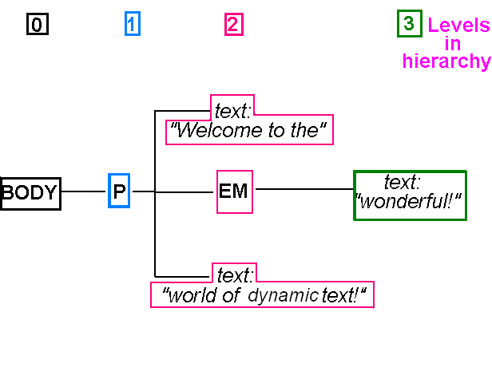

So far we have looked at how to parse JSON returned from web APIs, and populate the front end with the data contained within the JSON. We have also looked at how to send POST requests to the server via AJAX. However, we can build more sophisticated front-end applications using other techniques. Next week you will be introduced to the React framework for front-end development, however this week we will start by taking a look at the underlying mechanism for page manipulation, the Document Object Model (DOM).
Previously you've seen the innerHTML property which can be used to read, or change, the text within an HTML element. You've also looked at simple use of the Document Object Model (DOM) to access elements on a web page - specifically the use of getElementById() to access a specific
page element using its ID.
However that's just the start: the DOM offers a whole range of ways to read and manipulate HTML pages or XML data. To understand how you can use DOM for document manipulation, you must understand the concept of nodes, which we will discuss below. The examples below use the DOM to manipulate HTML documents, however, more generally, the DOM is used for accessing and manipulating XML documents. An HTML web page is a particular, specific type of XML document. So, as well as using the DOM to query and manipulate web pages, we can use it in a more general sense to query and manipulate XML. In AJAX, this latter use of the DOM is used extensively.
<body> <p> Welcome to the <em>wonderful!</em> world of dynamic text!</p> </body>
<body> <p> Welcome to the <em>wonderful!</em> world of dynamic text!</p> </body>

<body> <p> Welcome to the <em>wonderful!</em> world of dynamic text!</p> </body>
parentElement.removeChild(childElement)
(Source: Quirksmode, a very useful reference site for JavaScript and the DOM)
parent.childNodes.forEach ( childNode => {
alert(childNode.nodeName); // show name of the node
});
// create a child node of the parent, assume that 'parent' has no children yet
const p = document.createElement("p");
parent.appendChild(p);
// create a text node
const textNode = document.createTextNode("some text");
// append it to the first child of the node 'parent', which will be the
// paragraph we created above. In other words 'p' and 'parent.firstChild'
// are the same in this case.
parent.firstChild.appendChild(textNode);
document.querySelectorAll(".important")
will give an array of all elements with a class of important.
See Example
The inspect functionality in the browser will help you see what's going on - try it as you do the exercise for this week - right click on an element. Inspecting helps you to see the actual current DOM structure of the page - including any dynamically-created elements.
So far, we have been mostly using anonymous arrow functions as our event handlers, such as for button clicks. However, it's possible you might want to write a library of reusable JavaScript functions to perform certain tasks, and in this case, you would use named rather than anonymous functions. So you could have a function to like a product from a store, such as:
function likeProduct(productID) {
// send a request to the server to like the product with that ID
}
You could then supply this function to a button's addEventListener() as a callback function, e.g.:
document.getElementById('likeButton').addEventListener("click", likeProduct);
This would indicate that likeProduct() would be called when the button is pressed, at some future point in time. However, how might you pass across the product ID? You might possibly think you could do something like this:
document.getElementById('likeButton').addEventListener("click", likeProduct(productID));
However, this code would be wrong. This code will call likeProduct() immediately, not when the button is pressed. Why?
When a function is specified with parentheses, e.g. likeProduct(productID), it is immediately called. By contrast, likeProduct without parentheses merely supplies the function as an argument, without calling it. It will be called at some future point in time, i.e. when the button is clicked.
bind() function. Here is an example:
document.getElementById('likeButton').addEventListener("click", likeProduct.bind(this, productID));
Note how we call bind() on the callback function and pass across this followed by a list of arguments to be bound. bind() returns a new version of the callback, with the appropriate arguments bound. The first argument, this here, allows us to specify the context of this in the callback, which is mostly of use in object-oriented programming. See the advanced material below for more detail.
Ensure you have completed questions 1 to 4 from last week first.
The main exercise is to add "Buy" functionality to your AJAX front-end fron last week, so that a user can buy a given song. Songs will be bought by sending an AJAX POST request to the "buy" route of your web API.
Modify your AJAX front-end so that there is a "Buy" button for each search result. When the user clicks on the "Buy" button, you send an AJAX POST request to your "buy" route from week 1. To do this:
forEach), create a paragraph using document.createElement(), and set its innerHTML to the details of that song, taken from the JSON.
The basic logic you are aiming for is:
songs.forEach ( song => {
// Create the paragraph
// Set the innerHTML of the paragraph to the song details
// Add the paragraph to the <div> (question 2)
// Create a "Buy" button, with event handler (question 3 onwards)
});
appendChild(), append that paragraph to the results <div>.document.createElement() (see above). You should create an input element and set its type to button using setAttribute(), e.g:
const buttonElement = document.createElement("input");
buttonElement.setAttribute("type", "button");
value with setAttribute(), in the same way that you set the type to button.addEventListener() to add an event handler to the button. The event handler should be an arrow function. We did this last week with AJAX. For example:
//Note the arrow function needs to be async if we are using await
buttonElement.addEventListener ("click", async(e) =>
{
// fill in your arrow function here.
// It should call your "buy" web API route, passing in the ID of the current song.
}
);
buy route on your server. Obtain the ID from the JSON returned from the search. For now, you do not need to pass any POST data as JSON to the route, just add the ID to the URL.appendChild() to append it.alert().buy route from week 1 to allow the client to buy more than one copy of the song. The quantity to buy should be passed to the server as JSON POST data within the request body. You'll need to change the UPDATE statement to reduce the quantity by the specified amount.quantity text field for each song, allowing the user to specify the quantity to buy. Give each text field an ID containing the song ID, e.g. song445 for the song with the ID 445. Then, in the function which sends the AJAX POST request to the server, add code to read the quantity from the text field and send it as JSON POST data to the server.buy route so that it rejects the request with a 400 (Bad Request) error if the quantity requested from the client is 0 or less. Handle this error on the client with an alert() box.buySong() function, called when the user presses the Buy button, using bind().